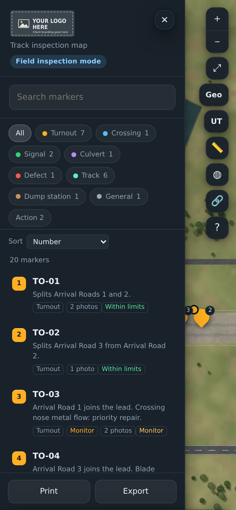

Live demo
A fictional bulk terminal with seven turnouts, a balloon loop and a dump station, loaded with two years of sample inspections and photos. Click around: nothing you do here can break it.
Open the demo in a new tab and work through these. Each one is something your team would do on your own map.
A turnout under an SR1 speed restriction, with four photos and two years of inspection history.
Every check lists its tolerances and the code each one gives. Type a reading and watch the result change.
Geometry and ultrasonic findings drawn over the track at their chainage.
Readings at 2 m stations from derailer to derailer, with one head height below the limit.
Any inspection as a PDF, with its photos and the limits for each check.
Scan the code with your phone camera to open the field version: the same screens your inspectors use. To keep it, tap Share then Add to Home Screen on iPhone, or Install app on Android.

The site, its inspections, reports and photos are sample data, and the aerial imagery is computer-generated. The tolerances are example limits.
Your map uses aerial imagery of your own loop or yard, the limits from the standard your site uses, and your logo.
Send us your site's location and a few details, and we'll quote it remotely, free.